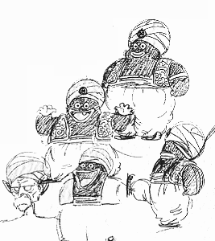

Akira Toriyama was born in Nagoya, Aichi, Japan on April 5, 1955. He has recalled that when he was in elementary school all of his classmates drew, imitating anime and manga, as a result of not having many forms of entertainment. He believes that he began to advance above everyone else when he started drawing pictures of his friends, and after winning a prize at the local art studio for a picture of One Hundred and One Dalmatians, began to think "art was fun"
Toriyama married his wife Yoshimi Katō (加藤由美) on May 2, 1982. She is a former manga artist from Nagoya under the pen name "Nachi Mikami" (みかみなち), and occasionally helped Toriyama and his assistant on Dr. Slump when they were short on time. They have two children; a son named Sasuke (佐助) born on March 23, 1987, and a daughter born in October 1990. Toriyama lives in his home studio in Kiyosu.
Toriyama has a love of cars and motorcycles, something he inherited from his father who used to race motorbikes and operated an auto repair business for a brief time. Although he does not understand the mechanics himself. The author is an animal lover, having kept many different species of birds, dogs, cats, fish, lizards and bugs as pets since childhood. Some were used as models for characters he created such as Karin and Beerus. Toriyama has had a lifelong passion for plastic models, and has designed several for the Fine Molds brand. He also collected autographs of famous manga artists, having over 30 including Yudetamago and Hisashi Eguchi, a hobby he gave to Peasuke Soramame.
Early Son Goku Concept
Early Kami and Popo Concept